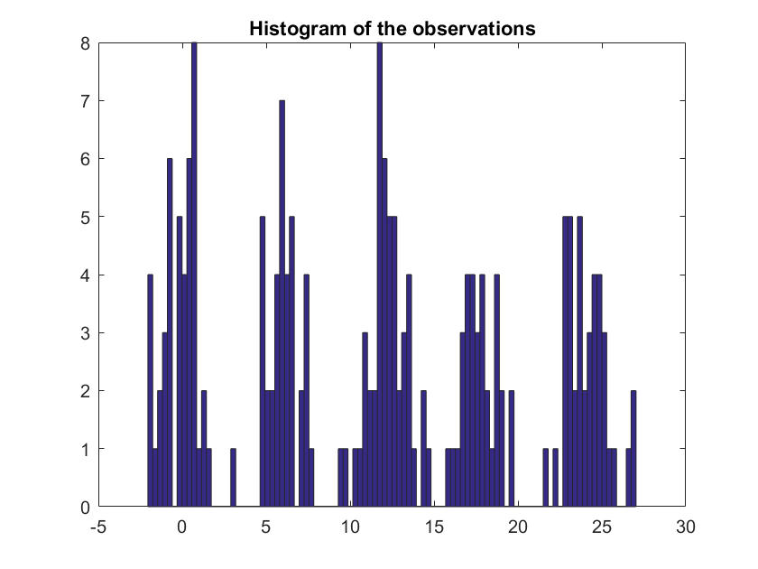
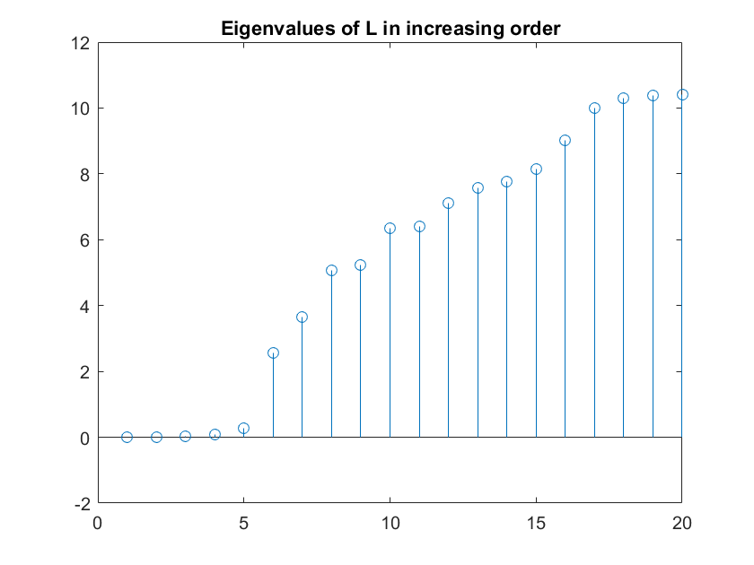
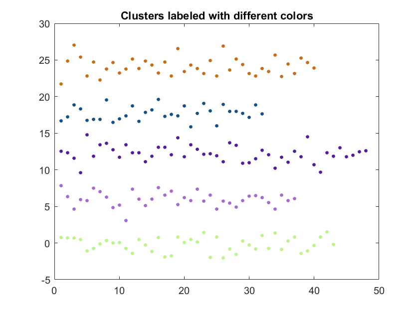

Spectral Clustering
This module demonstrates spectral clustering using the simple (and not necessarily practically meaningful) example provided in the tutorial by von Luxburg. We first sample N random variables from a Gaussian mixture with K mixtures the center of the clusters are c * 0:(K-1);
N = 200;
K = 5;
c = 6;
x = randn(N,1) + c * floor(K * rand(N,1));
figure;
hist(x,100);
title('Histogram of the observations');
 Let us now construct the weight matrix. This is the weight matrix for the 'full connected graph' in the tutorial.
sig = 1; % the sigma parameter used in the W = abs( x * ones(1,N) - ones(N,1) * x' ); W = exp(-W.^2 / (2 * sig^2)); W(1:N+1:end) = 0; % set the diagonal to zero
The degree matrix is the diagonal matrix with diagonals equal to the sum of the rows.
D = diag(sum(W,2));
The Laplacian matrix is constructed as the difference of the degree and the weight matrices.
L = D - W;
We now perform an eigenanalysis on the Laplacian and plot the first 20 eigenvalues.
[V,E] = eig(L);
e = diag(E);
figure;
stem(e(1:20));
title('Eigenvalues of L in increasing order');
 Observe that the first K eigenvalues are close to zero, as expected by the discussion in the tutorial. The next step is to extract the matrix U and apply the k-means algorithm.
U = V(:,1:K); I = kmeans(U,K);
The matrix I holds the indices of the clusters. Let us plot each cluster with a different color.
figure; for k = 1:K, ind = (I == k); plot(x(ind),'.','Markersize',12,'color',(rand(1,3))); hold on; end title('Clusters labeled with different colors');
Ilker Bayram, Istanbul Teknik Universitesi, 2016